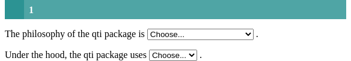
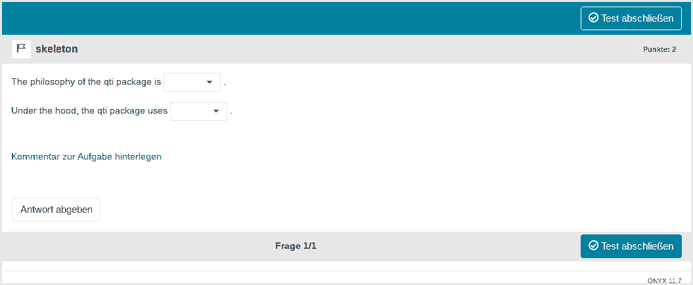
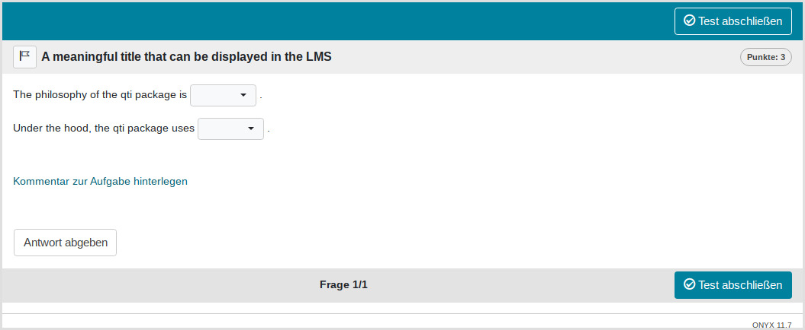

Minimum version
In this type of exercise, the candidate has to select an element form
a dropdown-list. Note that our package implements dropdowns as gaps
because this is essentialy what dropwdowns are. Several dropdowns can be
combined in a single exercise, but a combination with numeric and text
gaps is not possible. A template is available in RStudio when you click
on New file -> R Markdown -> From Template. The qti
templates start with QTI:. Here we look at the templates
QTI: dropdown (simple) and
QTI: dropdown (complex).
The minimum you need to provide is the type: dropdown
(or the equivalent type: dd) in the yaml-section and some
text, where at least one gap is formed as a dropdown-element, in a
section called #question:
---
type: dropdown
knit: qti::render_qtijs
---
```{r echo=F}
library(qti)
```
# question
The philosophy of the qti package is <<do one thing and do it well|one for all>>.
Under the hood, the qti package uses `r dropdown(c("S4 OOP", "S3 OOP", "no OOP", "R6 OOP"))`.
# feedback
The package `qti` is specialized for producing xml qti files so "do one thing and do it well" is more appropriate. Under the hood we use S4 OOP.Knitting via the Knit-Button to qtijs, this exercise renders as:

Alternatively, change the knit parameter to
knit: render_opal (see API
Opal) to upload to Opal directly, producing:

There are 2 ways to specify a dropdown-element in Rmd content:
- Put the right answer inside
<<…>>(or the equivalent<gap>…</gap>). Example:<<element1|element2|element3>> - use the helper function
dropdown
By default, 1 point can be reached for each dropdown (specify
points to your needs). The total number of points for
completing a task is defined as the sum of points of all dropdowns.
Note that in this example, a feedback section was also provided. The feedback is optional, but usually it is a good idea to give some explanation for students. In dropdown exercises the feedback refers to the whole task, not to a specific dropdown. Group your feedback into appropriate sections, which can be opened/closed for better user experience (use details and summary html tags).
More control
If you want to have more fine-grained control, consider the RMD
template QTI: dropdown (complex), which uses more yaml
attributes.
---
type: dd # type of exercise
knit: qti::render_qtijs # if you do not want our preview renderer, remove this
identifier: TOPIC1_Q001 # think twice about this id for later data analysis!
title: A meaningful title that can be displayed in the LMS
---
```{r echo=F}
library(qti)
```
# question
The philosophy of the qti package is <<do one thing and do it well|one for all>>.
Under the hood, the qti package uses `r dropdown(c("no OOP" = "no OOP", "S4" = "S4 OOP", "S3" = "S3 OOP", "R6" = "R6 OOP"), solution_index = 2, points = 2, response_identifier = "OOP_task")`.
# feedback
The package `qti` is specialized for producing xml qti files so "do one thing and do it well" is more appropriate. Under the hood we use S4 OOP.Which renders as:

yaml attributes
Feedback
Feedback can be provided with the section
- # feedback (general feedback, displayed every time, without conditions)
- # feedback+ (only provided if student reaches all points)
- # feedback- (only provided if student does not reach all points)
Helper function dropdown
This helper function is used to generate a formatted string describing a dropdown in Rmd content:
choices <- c("c1" = "S4 OOP", "c2" = "S3 OOP", "c3" = "no OOP", "c4" = "R6 OOP")
oop_task <- dropdown(choices = choices, solution = "S4 OOP",
response_identifier = "OOP_task")
oop_task
#> [1] "<gap>{choices: [S4 OOP,S3 OOP,no OOP,R6 OOP], solution_index: S4 OOP, points: 1.0, shuffle: yes, response_identifier: OOP_task, choices_identifiers: [c1,c2,c3,c4], type: InlineChoice}</gap>"Argument list of dropdown:
choices
Elements of dropdown. If you use a named vector, the names will be used as identifiers. This is useful for later data analysis.
solution_index
The index of the correct choice as a numeric. Default is 1, meaning
that you can simply put the correct element as the first one in the
vector choices.
shuffle
If TRUE, randomizes the order of the choices. Defaults
to TRUE. Only in rare occasions it makes sense to have a
strict order of choices (setting shuffle to FALSE).
response_identifier
This is the ID of the dropdown-element, useful for later data analysis of results. The default has the format “response_1”, “response_2”, …“response_n” for several dropdowns. If you are doing extensive data analysis later on, it makes sense to specify a more meaningful identifier.
Some advice on dropdown exercises
Dropdown exercises seem to be similar to numeric and text gaps, but they are forced choice items, so are actually equivalent to single choice exercises. The advantage is that they can be placed in between other text and several of them can be used in a single exercise. Still, they suffer from the same problems as single choice exercises.